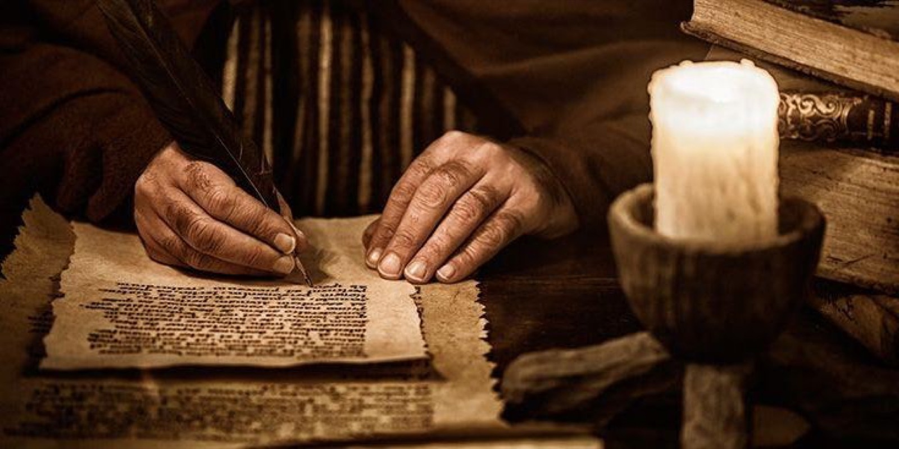

Neno lililo hai,
kwa kina.
Makala za kina zinazofafanua Imani za Msingi za Biblia — kwa lugha rahisi, kwa moyo wa ibada.
Zaburi 119:105“Neno lako ni taa ya miguu yangu, na mwanga wa njia yangu.”
Makala, vitabu na zaidi
Je, Sabato Ilikoma kwa Kuwa Ilikuwa Kivuli cha Mambo Yajayo?
Kuna mafundisho yanayoenea kwamba Sabato ilikuwa ni kivuli cha mambo yajayo, na hivyo haina tena umuhimu kwa Wakristo. Wengine hudai kwamba kwa kuwa Kristo amekuja, hakuna haja tena ya…
Sanduku la Agano: Je, Litaonekana Tena?
Kwa maelfu ya miaka, Sanduku la Agano limekuwa moja ya mafumbo makubwa ya historia ya Biblia. Je, sanduku hili takatifu, ambalo lilihifadhi Amri Kumi, litaonekana tena mbeleni au limepotea…
Nini Hasa Maana ya Kibiblia ya Maneno ya Baba: “Mimi Leo Nimekuzaa”?
Biblia inatoa rejea kadhaa zinazoonyesha matukio kadhaa ya kuzaliwa kwa Yesu. Pia kuna wakati inarejea mazungumzo yaliyofanyika kati ya Mungu Baba na Yesu, ambayo yanaonyesha Yesu alizaliwa…
Je, Yesu ni “Mungu Mwana” au “Mwana wa Mungu”?
Miongoni mwa wengi wanaojifunza habari za mahusiano yaliyopo kati ya Mwana na Baba, hawapendi kumuita Yesu kwa kutumia jina “Mungu Mwana,” badala yake wanapenda kumuita "Mwana wa Mungu."…
Kwa Nini Mungu Alimuumba Lusifa?
Ingawaje Biblia inavidokezo vichache kuhusu Swali hili, bado hata hivyo haiwezekani kulitolea jibu linalotosheleza katika ukamilifu wake. Mada hii haijashughulikiwa kwa uwazi na kwa kina…

Papa Gregory XIII Alipobadilisha Kalenda: Siku Zilivurugwa, Sabato Ilipotea?
Mamilioni ya watu leo hii, wanashikilia ufahamu kwamba ni vigumu sana kujua hasa kwamba siku ya Jumamosi ni lini kwa sababu wakati flani katika kalenda, kuna siku zilipotea kutokana na…
Je, ni Lazima Kupiga Magoti Wakati wa Maombi?
Kumekuwa na mijadala mingi hivi karibuni kuhusu upi ni mkao sahihi wakati mtu anapokuwa katika ibada ya maombi; hoja hizi zinatafuta kujua endapo daima tunapaswa kusali au kuomba tukiwa…
Milenia: Mambo Muhimu 8 Unayopaswa Kufahamu
Karibu tusafari pamoja katika unabii unaofunua nyakati muhimu katika mpango mkubwa uliowekwa na Mungu – kipindi cha miaka elfu moja, kinachojulikana kama "mileniam." Ingawa neno hili…
Pambano Kuu: Chanzo cha Uovu na Ushindi wa Mungu
Kwa nini kuna dhambi, maumivu na mateso kama Mungu ni mwema? Somo hili la Imani ya Msingi Na. 8 linachunguza chanzo cha Pambano Kuu, wahusika wake, mbinu za Shetani na mpango wa Mungu wa kutupatia ushindi.
Hakuna makala inayolingana na utafutaji wako.
Beba makala hizi popote uendapo.
Kila makala ni PDF iliyopangwa kwa ustadi — kwa ajili ya kujisomea, vikundi vya Biblia na kuchapisha.
Tembelea Duka